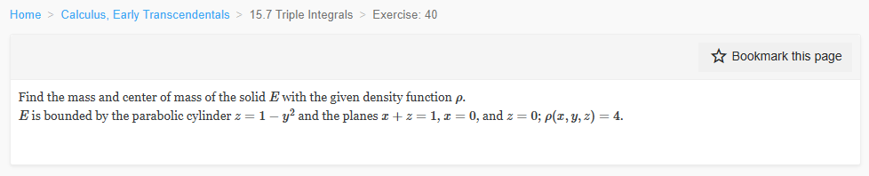

Please solve the problem in the following image.
(Image `20260928_142031_407188_utc_0800_0.png`. Alt text: Image: human_20260928_142031_407188_utc_0800)

20260928_142031_407188_utc_0800_0.png
End of problem
Answer
## Solution
The solid is described by
$$
E=\{(x,y,z):-1\le y\le 1,\quad 0\le z\le 1-y^2,\quad 0\le x\le 1-z\}.
$$
Indeed, the parabolic cylinder $z=1-y^2$ meets $z=0$ at $y=\pm1$, and the planes $x=0$, $z=0$, $x+z=1$ form the triangular constraint $0\le x\le 1-z$.
### 1. Mass
Since $\rho(x,y,z)=4$ is constant,
$$
M=4V=4\int_{-1}^{1}\int_{0}^{1-y^2}\int_{0}^{1-z}dx\,dz\,dy.
$$
First integrate in $x$ and $z$:
$$
\int_{0}^{1-y^2}\int_{0}^{1-z}dx\,dz
=\int_{0}^{1-y^2}(1-z)\,dz
=\left[z-\frac{z^2}{2}\right]_{0}^{1-y^2}
=\frac{1-y^4}{2}.
$$
Thus
$$
V=\int_{-1}^{1}\frac{1-y^4}{2}\,dy
=\frac12\left[y-\frac{y^5}{5}\right]_{-1}^{1}
=\frac12\left(\frac45+\frac45\right)
=\frac45.
$$
Therefore
$$
M=4\left(\frac45\right)=\frac{16}{5}.
$$
### 2. Center of mass
Because the region is symmetric in $y$ and $\rho$ is constant,
$$
\bar y=0.
$$
For $\bar x$,
$$
\iiint_E x\,dV
=\int_{-1}^{1}\int_{0}^{1-y^2}\int_{0}^{1-z}x\,dx\,dz\,dy.
$$
Inner integral:
$$
\int_{0}^{1-z}x\,dx=\frac{(1-z)^2}{2}.
$$
Then
$$
\int_{0}^{1-y^2}\frac{(1-z)^2}{2}\,dz
=\frac12\left[-\frac{(1-z)^3}{3}\right]_{0}^{1-y^2}
=\frac{1-y^6}{6}.
$$
Hence
$$
\iiint_E x\,dV
=\int_{-1}^{1}\frac{1-y^6}{6}\,dy
=\frac16\left[y-\frac{y^7}{7}\right]_{-1}^{1}
=\frac{2}{7}.
$$
So
$$
\bar x=\frac{\iiint_E x\,dV}{V}
=\frac{2/7}{4/5}=\frac{5}{14}.
$$
For $\bar z$,
$$
\iiint_E z\,dV
=\int_{-1}^{1}\int_{0}^{1-y^2}\int_{0}^{1-z}z\,dx\,dz\,dy
=\int_{-1}^{1}\int_{0}^{1-y^2}z(1-z)\,dz\,dy.
$$
Inner integral:
$$
\int_{0}^{1-y^2}(z-z^2)\,dz
=\frac{(1-y^2)^2}{2}-\frac{(1-y^2)^3}{3}.
$$
Using
$$
\int_{-1}^{1}(1-y^2)^2\,dy=\frac{16}{15},\qquad
\int_{-1}^{1}(1-y^2)^3\,dy=\frac{32}{35},
$$
we get
$$
\iiint_E z\,dV
=\frac12\cdot\frac{16}{15}-\frac13\cdot\frac{32}{35}
=\frac{8}{15}-\frac{32}{105}
=\frac{8}{35}.
$$
Thus
$$
\bar z=\frac{\iiint_E z\,dV}{V}
=\frac{8/35}{4/5}=\frac{2}{7}.
$$
Therefore the center of mass is
$$
(\bar x,\bar y,\bar z)=\left(\frac{5}{14},0,\frac{2}{7}\right).
$$
$$
\boxed{M=\frac{16}{5},\qquad (\bar x,\bar y,\bar z)=\left(\frac{5}{14},0,\frac{2}{7}\right)}
$$
---
No graphical results.